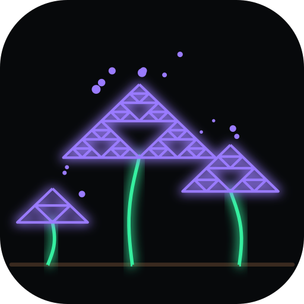

What grows out of the mesh. Your coding agents keep running on your own machines — the laptop, a server, the box under the desk — and you talk to them from your phone or from Basecamp: replies as they are written, what they want to run, the questions they ask, files and voice notes. Nothing sits in between. Being on your mesh is what lets you in.
A separate app and Basecamp module beside shrooms, not part of it (ADR-036). Everything below works today; where something is not built yet, it says so.
Each machine runs shrooms-agent, which keeps that machine's
sessions: a name, a directory, and the coding agent working in it. The
phone app and the Basecamp module find every agent on your mesh and list
their sessions together — the ones you star first, whatever machine they
are on.
--dangerously-skip-permissions. Questions
the agent asks come as a card with the options to pick, or room for your
own words.The coding agent itself is pluggable. Two are built in:
Adding another is one translator: a file that starts the program and turns what it says into the events the apps already show, so neither app changes. The guide walks through pi as the worked example, with the exact events a new one must produce. OpenCode and Codex are next; they are not built yet.
shrooms-agent listens only on the machine's mesh addresses —
never on its LAN or public ones — so the only devices that can reach it
are your mesh's members. There is no account, no token, no server in the
middle, and nothing to log in to: being admitted to the mesh is the
authorisation, and revoking a device from the mesh revokes it here too.
What that means, said plainly. Every member of the mesh can drive the agents on it, and an agent can do whatever its user can do on that machine. That is right for a mesh of your own devices, which is what this is for. It is not right for a mesh you share with other people — run the agent only where every member is you.
The agent runs as an ordinary user, never as root, and is a separate program from the shrooms daemon: the network stays the boring, privileged part, and the part that runs code on request stays out of it.
sudo make install from the repository installs
shrooms-agent with shrooms, as a user service:
systemctl --user enable --now shrooms-agent
loginctl enable-linger $USER
It serves whatever this machine has: Claude Code (logged in once, as you
would in a terminal), pi when it is installed, and voice notes when
whisper.cpp's parakeet-cli and its model are there. The user
it runs as needs to read the shrooms control socket — the
socket_group setting, or on a machine whose daemon runs in a
container, an ACL;
docs/agents.md
has both, and the firewall rule a machine with firewalld needs.
Shrooms Agents is its own Android app, beside the shrooms VPN app, which
hands it the mesh it can reach: open it from the "agents" link in shrooms.
Build it with AGENTS=1 scripts/build-apk.sh; it is not in a
public store.
The shrooms_agents module, built with
make basecamp-agents-lgx, beside the shrooms module, which
does its networking.